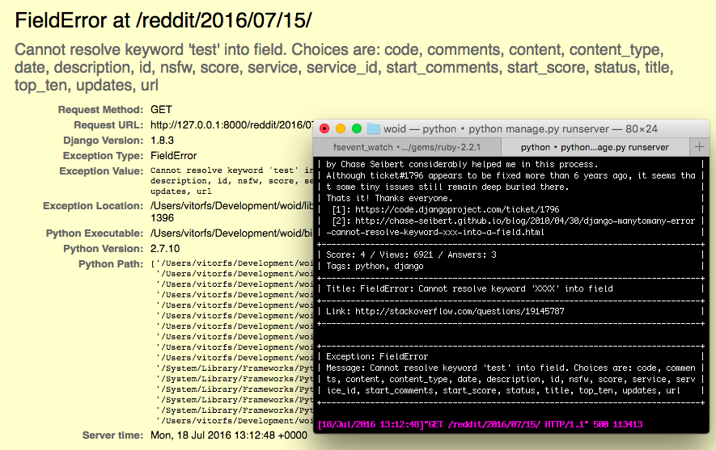
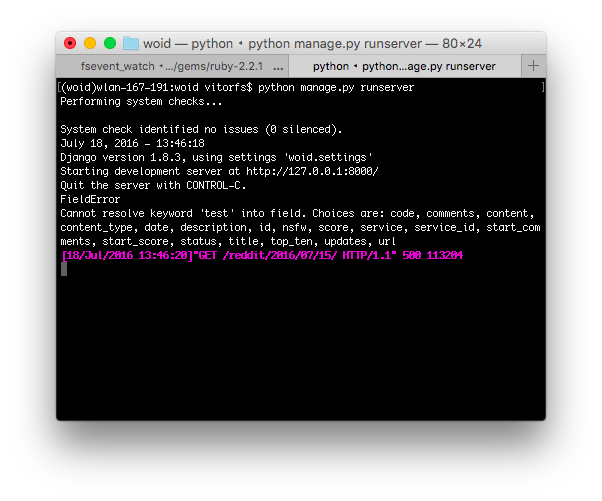
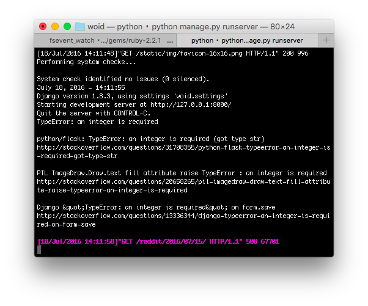

In a nutshell, a Middleware is a regular Python class that hooks into Django’s request/response life cycle. Those classes holds pieces of code that are processed upon every request/response your Django application handles.
The Middleware classes doesn’t have to subclass anything and it can live anywhere in your Python path. The only thing
Django cares about is the path you register in the project settings MIDDLEWARE_CLASSES.
Your Middleware class should define at least one of the following methods:
- Called during request:
- process_request(request)
- process_view(request, view_func, view_args, view_kwargs)
- Called during response:
- process_exception(request, exception) (only if the view raised an exception)
- process_template_response(request, response) (only for template responses)
- process_response(request, response)
How it works?
The Middlware classes are called twice during the request/response life cycle. For that reason, the order you define
the Middlwares in the MIDDLEWARE_CLASSES configuration is important.
Let’s have a look on the built-in Middleware classes the django-admin startproject command sets up:
MIDDLEWARE_CLASSES = [
'django.middleware.security.SecurityMiddleware',
'django.contrib.sessions.middleware.SessionMiddleware',
'django.middleware.common.CommonMiddleware',
'django.middleware.csrf.CsrfViewMiddleware',
'django.contrib.auth.middleware.AuthenticationMiddleware',
'django.contrib.auth.middleware.SessionAuthenticationMiddleware',
'django.contrib.messages.middleware.MessageMiddleware',
'django.middleware.clickjacking.XFrameOptionsMiddleware',
]During the request cycle, the Middleware classes are executed top-down, meaning it will first execute
SecurityMiddleware, then SessionMiddleware all the way until XFrameOptionsMiddleware. For each of the Middlewares
it will execute the process_request() and process_view() methods.
At this point, Django will do all the work on your view function. After the work is done (e.g. querying the database, paginating results, processing information, etc), it will return a response for the client.
During the response cycle, the Middleware classes are executed bottom-up, meaning it will first execute
XFrameOptionsMiddleware, then MessageMiddleware all the way until SecurityMiddleware. For each of the Middlewares
it will execute the process_exception(), process_template_response() and process_response() methods.
Finally Django will deliver the response for the client. It is important to note that process_exception() is only executed if a exception occurs inside the view function and process_template_response() is only executed if there is a template in the response.
The image below was extracted from the official Django documentation and it represents well the process described above.

Creating a Custom Middleware
To ilustrated this post, let’s create a custom Middleware class that intercept all the exceptions that occur in our view functions then grab the exception message and query the StackOverflow API and return the three top answers and print it to the terminal.
I will call it StackOverflow Exception Troubleshooting, or simply SOET. So it’s gonna be a Middleware for
debugging, meant to run only when DEBUG=True.
This is what our Middleware will look like:

Our view function thorws an uncaugh exception, the SOET Middleware process it, search for a solution on StackOverflow, and print the three most relevant results for the developer directly in this terminal window.
Cool right? You will see how easy it is to implement it.
Getting Started
For this example I created a Django app named soet because I wanted to make it available for everyone. I will get
back to that later. But if you already have an app that makes sense to create the middleware in, go ahead.
Inside the soet app I created a file named middleware.py. At the moment it looks like that:
class StackOverflowMiddleware(object):
def process_exception(self, request, exception):
return NoneNow I gotta register my new Middleware in the MIDDLEWARE_CLASSES configuration:
MIDDLEWARE_CLASSES = (
'django.contrib.sessions.middleware.SessionMiddleware',
'django.middleware.common.CommonMiddleware',
'django.middleware.csrf.CsrfViewMiddleware',
'django.contrib.auth.middleware.AuthenticationMiddleware',
'django.contrib.auth.middleware.SessionAuthenticationMiddleware',
'django.contrib.messages.middleware.MessageMiddleware',
'django.middleware.clickjacking.XFrameOptionsMiddleware',
'django.middleware.security.SecurityMiddleware',
'soet.middleware.StackOverflowMiddleware',
)I’ve registered it as the last one because the process_exception() method is only processed during the response cycle, and I want my middleware to be executed first so no other Middleware supress the thrown exception.
At this point our brand new Middleware isn’t doing anything really. But it is already being executed. We can test it
by putting a print statement inside the process_exception() method. Also it is important that our method always
return None so to keep the flow of the Middlewares processing. We don’t want to affect the behavior of what is
returned to the client.
class StackOverflowMiddleware(object):
def process_exception(self, request, exception):
print exception.__class__.__name__
print exception.message
return None
Now let’s make sure we are only executing this Middleware if the DEBUG=True:
from django.conf import settings
class StackOverflowMiddleware(object):
def process_exception(self, request, exception):
if settings.DEBUG:
print exception.__class__.__name__
print exception.message
return NoneConsuming the StackOverflow API
The idea now is to use the exception message and the exception name to query the StackOverflow database through its API in order to find relevant solutions.
To save us some time and avoid struggling with the python standard libraries urllib and urllib2, let’s just use the
awesome Requests library.
Also I will not go into much detail about the StackOverflow API. The previous link will take you
to the official documentation where you can learn more. That being said, I will stick with the /2.2/search endpoint.
import requests
from django.conf import settings
class StackOverflowMiddleware(object):
def process_exception(self, request, exception):
if settings.DEBUG:
intitle = u'{}: {}'.format(exception.__class__.__name__, exception.message)
print intitle
url = 'https://api.stackexchange.com/2.2/search'
headers = { 'User-Agent': 'github.com/vitorfs/seot' }
params = {
'order': 'desc',
'sort': 'votes',
'site': 'stackoverflow',
'pagesize': 3,
'tagged': 'python;django',
'intitle': intitle
}
r = requests.get(url, params=params, headers=headers)
questions = r.json()
print ''
for question in questions['items']:
print question['title']
print question['link']
print ''
return None
So at this point we are already consuming the StackOverflow API! It is pretty much it. Now we are listing the top 3
questions with the tags python and django, displaying its title and the question url.
Now it is a matter of selecting the right fields and displaying it in the terminal, using the same strategy.
Try it Live
The source code of this little experiment is available on GitHub. The package is also available on PyPI.
Here is a quick start if you want to try it:
1. Install using pip:
pip install django-soet2. Include “soet” to your INSTALLED_APPS:
INSTALLED_APPS = [
...
'soet',
]3. Include “StackOverflowMiddleware” to your MIDDLEWARE_CLASSES:
MIDDLEWARE_CLASSES = (
...
'soet.middleware.StackOverflowMiddleware',
)4. Make sure you are running your project with DEBUG=True.
5. Start your development server and wait for the view exceptions (or not).
 How to Extend Django User Model
How to Extend Django User Model
 How to Setup a SSL Certificate on Nginx for a Django Application
How to Setup a SSL Certificate on Nginx for a Django Application
 How to Deploy a Django Application to Digital Ocean
How to Deploy a Django Application to Digital Ocean